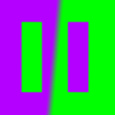

Pause
Made in: Unreal Engine 4

Pause is a First Person Puzzle Platformer built in Unreal Engine 4. The game gives the player the ability to deploy waves of physics objects and the ability to freeze time by pausing the world. Through manipulating and deploying physics objects and well timed pauses, the player traverses the game's puzzles and makes it to the end of each level. I opted for a simple aesthetic for Pause, featuring mostly simple geometric shapes and simple colors. This lends to the negative effect pausing uses, and leads to less work for me, a game developer with minimal model making and texturing ability.